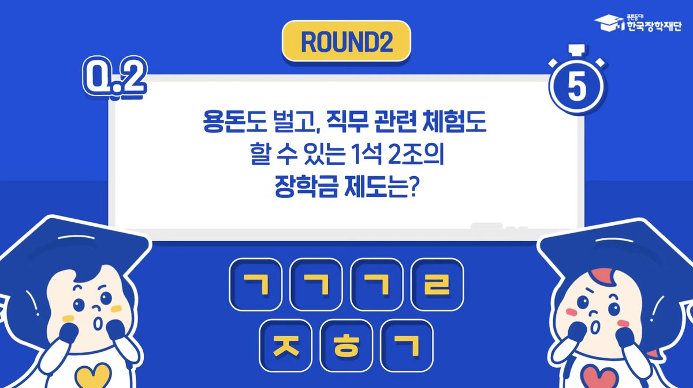

KOSAF Motion Graphic
Motion Graphic
한국장학재단의 장학 · 지원 정보를 일러스트 모션그래픽으로 풀어낸 영상입니다. 딱딱하게 느껴질 수 있는 인포메이션을 보다 쉽고 친근한 스토리로 전달하고자 했습니다.
캐릭터의 눈썹, 눈, 입 같은 디테일한 움직임과 페이퍼를 넘기는 효과 등 다양한 이펙트를 더해 보는 재미를 살렸습니다.
Scenes

 영상 보기
영상 보기